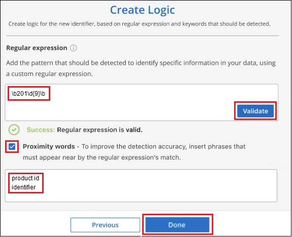
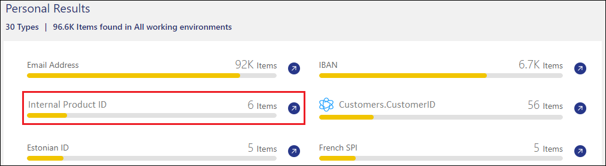

リリースノート
リリースノート
BlueXPの分類スキャンに個人データ識別子を追加
 変更を提案
変更を提案
BlueXPの分類では、今後のスキャンでBlueXPの分類によって特定される「個人データ」のカスタムリストを追加するためのさまざまな方法が用意されています。これにより、機密性の高いデータが_all_組織のファイル内のどこにあるかを全体的に把握できます。
-
スキャンするデータベース内の特定の列に基づいて一意の識別子を追加できます。
-
テキストファイルからカスタムキーワードを追加できます。これらの単語はデータ内で識別されます。
-
正規表現（regex）を使用してパーソナルパターンを追加できます。既存の定義済みパターンに正規表現が追加されます。
-
カスタムカテゴリを追加して、データ内の特定のカテゴリの情報を特定できます。
カスタムスキャン条件を追加するこれらのメカニズムはすべて、すべての言語でサポートされています。

|
このセクションで説明する機能は、データソースに対して完全な分類スキャンを実行することを選択した場合にのみ使用できます。マッピングのみのスキャンを実行したデータソースでは、ファイルレベルの詳細は表示されません。 |
データベースからカスタムの個人データ識別子を追加します
Data Fusion _という機能を使用すると、組織のデータをスキャンして、データベースからの一意の識別子が他のいずれかのデータソースに存在するかどうかを確認できます。データベーステーブルで特定の列を選択することで、BlueXPのスキャンで検索される追加の識別子を選択できます。たとえば、次の図は、データ Fusion を使用してボリューム、バケット、およびデータベースをスキャンし、 Oracle データベースからすべての顧客 ID が出現する状況を示しています。

このように、 2 つのボリュームと 1 つの S3 バケットにそれぞれ一意の顧客 ID が見つかりました。データベーステーブル内の一致も識別されます。
独自のデータベースをスキャンするため、データが保存されている言語に関係なく、今後のBlueXP分類スキャンでデータを識別するために使用されることに注意してください。
が必要です "データベースサーバを少なくとも 1 つ追加しました" データFusion ソースを追加する前に、をBlueXPの分類に追加する必要があります。
-
[ 構成 ] ページで、ソースデータが存在するデータベースの [ データ Fusion の管理 ] をクリックします。
 ボタンを選択するスクリーンショット。"]
ボタンを選択するスクリーンショット。"] -
次のページで [Add Data Fusion source*] をクリックします。
-
[Add Data Fusion Source_] ページで、次の手順を実行します。
-
ドロップダウンメニューからデータベーススキーマを選択します。
-
そのスキーマにテーブル名を入力します。
-
使用する一意の識別子を含む列を入力します。
複数の列を追加する場合は、各列名またはテーブルビュー名を別々の行に入力します。

-
-
[Add Data Fusion Source*] をクリックします。

次のスキャンの後、この新しい情報は、［個人の結果］セクションの［コンプライアンスダッシュボード］と［個人データ］フィルタの［調査］ページに表示されます。分類子に使用した名前がフィルタリストに表示されます。例： Customers.CustomerID。

Data Fusion ソースを削除します
特定の Data Fusion ソースを使用してファイルをスキャンしない場合は、 Data Fusion インベントリページからソース行を選択し、 ［ * データ Fusion ソースの削除 * ］ をクリックします。

単語のリストからカスタムキーワードを追加します
BlueXPの分類にカスタムキーワードを追加すると、その情報がデータ内のどこにあるかがわかるようになります。キーワードを追加するには、BlueXPの分類で認識したい単語を1つずつ入力します。これらのキーワードは、BlueXPの分類ですでに使用されている定義済みの既存のキーワードに追加され、結果は個人のパターンセクションに表示されます。
たとえば、すべてのファイルで内部製品名が言及されている場所を確認して、これらの名前が安全でない場所でアクセスできないようにすることができます。
カスタムキーワードを更新すると、BlueXP分類によってすべてのデータソースのスキャンが再開されます。スキャンが完了すると、BlueXP分類コンプライアンスダッシュボードの[Personal Results]セクションと[Investigation]ページの[Personal Data]フィルタに新しい結果が表示されます。
-
[_Classification settings]タブで*[Add New Classifier]*をクリックし、_Add Custom Classifier_wizardを起動します。

-
[タイプの選択]ページで、分類子の名前を入力し、短い概要 を入力して、[Personal identifier]を選択し、[次へ*]をクリックします。
入力した名前は、BlueXP分類UIに分類子の要件に一致するスキャン済みファイルの見出しとして表示され、[Investigation]ページにフィルタの名前として表示されます。
また、「システムで検出された結果をマスク」のチェックボックスをオンにして、UIに完全な結果が表示されないようにすることもできます。たとえば、クレジットカード番号や類似の個人データを完全に非表示にする場合があります(マスクは次のようにUIに表示されます:"**********" 3434 )。

-
[データ分析ツールの選択]ページで、分類子の定義に使用する方法として*を選択し、[次へ]*をクリックします。
 を選択したスクリーンショット。"]
を選択したスクリーンショット。"] -
[Create Logic]ページで、認識するキーワード（各単語を別 々 の行に入力）を入力し、*[Validate]*をクリックします。
下のスクリーンショットは、内部の製品名(さまざまな種類のフクロウ)を示しています。これらの項目に対するBlueXPの分類検索では、大文字と小文字は区別されません。

-
[完了]*をクリックすると、BlueXPの分類によってデータの再スキャンが開始されます。
スキャンが完了すると、コンプライアンスダッシュボードの[個人結果]セクションと[個人データ]フィルタの[調査]ページに、この新しい情報が結果に含まれます。
 ペインにカスタムキーワードの結果の例を示すスクリーンショット。"]
ペインにカスタムキーワードの結果の例を示すスクリーンショット。"]
ご覧のように、分類子の名前が個人結果パネルの名前として使用されます。このようにして、さまざまなキーワードグループをアクティブ化し、各グループの結果を表示できます。
正規表現を使用してカスタムの個人データ識別子を追加する
カスタム正規表現（regex）を使用して、データ内の特定の情報を識別するためのパーソナルパターンを追加できます。これにより、新しいカスタム正規表現を作成して、システムにまだ存在しない新しい個人情報要素を特定できます。正規表現は、BlueXPの分類ですでに使用されている既存の定義済みパターンに追加され、結果は[Personal Patterns]セクションに表示されます。
たとえば、すべてのファイルで内部製品IDが記載されている場所を確認できます。製品IDに明確な構造が含まれている場合、たとえば、201で始まる12桁の数値であれば、カスタム正規表現機能を使用してファイル内で検索できます。この例の正規表現は*\b201\d｛9｝\b *です。
正規表現を追加すると、BlueXPの分類によってすべてのデータソースのスキャンが再開されます。スキャンが完了すると、BlueXP分類コンプライアンスダッシュボードの[Personal Results]セクションと[Investigation]ページの[Personal Data]フィルタに新しい結果が表示されます。
を参照してください https://regex101.com/ 正規表現の作成にサポートが必要な場合は、フレーバーに「* Python *」を選択すると、BlueXPの分類が正規表現と一致する結果のタイプが表示されます。
|
|
現在、正規表現を作成するときにパターンフラグを使用することは許可されていません。これは、"/"を使用しないことを意味します。 |
-
[_Classification settings]タブで*[Add New Classifier]*をクリックし、_Add Custom Classifier_wizardを起動します。
-
[タイプの選択]ページで、分類子の名前を入力し、短い概要 を入力して、[Personal identifier]を選択し、[次へ*]をクリックします。
入力した名前は、BlueXP分類UIに分類子の要件に一致するスキャン済みファイルの見出しとして表示され、[Investigation]ページにフィルタの名前として表示されます。また、「システムで検出された結果をマスク」のチェックボックスをオンにして、UIに完全な結果が表示されないようにすることもできます。たとえば、クレジットカード番号全体または類似の個人データを非表示にする場合などです。

-
[データ分析ツールの選択]ページで、分類子の定義に使用するメソッドとして[カスタム正規表現*]を選択し、[次へ*]をクリックします。
 が選択されていることを示すスクリーンショット。"]
が選択されていることを示すスクリーンショット。"] -
Create Logic_pageで、正規表現と近接文字を入力し、* Done *をクリックします。
-
正規表現は任意に入力できます。[検証]*ボタンをクリックして、BlueXPで正規表現が有効かどうか、また正規表現が広すぎないかどうか（返される結果が多すぎないかどうか）が検証されます。
-
必要に応じて、近接キーワードを入力して結果の精度を高めることができます。検索対象のパターンの300文字以内（検出されたパターンの前または後）に検索されるのが一般的な単語です。単語またはフレーズをそれぞれ別の行に入力します。

-
分類子が追加され、BlueXPの分類によってすべてのデータソースの再スキャンが開始されます。カスタム分類子ページに戻り'新しい分類子に一致するファイルの数を確認できますすべてのデータソースをスキャンした結果は、スキャンする必要があるファイルの数によってはしばらく時間がかかります。

カスタムカテゴリを追加します
BlueXPは、スキャンしたデータをさまざまなカテゴリに分類して分類します。カテゴリは、各ファイルのコンテンツとメタデータの人工知能分析に基づくトピックです。 "事前定義されたカテゴリのリストを参照してください"。
カテゴリを使用すると、保有している情報の種類を表示して、データの状況を把握することができます。たとえば、_resumes_or_employee contracts_のようなカテゴリには、機密データが含まれている場合があります。結果を調査すると、従業員契約が安全でない場所に保存されていることがわかります。その後、その問題を修正できます。
BlueXPの分類にカスタムカテゴリを追加すると、データ資産に固有の情報のカテゴリがデータのどこにあるかを特定できます。特定するデータのカテゴリを含む「トレーニング」ファイルを作成して各カテゴリを追加し、BlueXPの分類でそれらのファイルをスキャンしてAIで「学習」し、データソース内のそのデータを識別できるようにします。これらのカテゴリは、BlueXPの分類ですでに識別されている既存の事前定義されたカテゴリに追加され、[カテゴリ]セクションに結果が表示されます。
たとえば、必要に応じて削除できるように、.gz形式の圧縮インストールファイルがファイル内のどこにあるかを確認することができます。
カスタムカテゴリを更新すると、BlueXPの分類によってすべてのデータソースのスキャンが再開されます。スキャンが完了すると、BlueXP分類コンプライアンスダッシュボードの[カテゴリ]セクションと[カテゴリ]フィルタの[調査]ページに新しい結果が表示されます。 "カテゴリ別にファイルを表示する方法を参照してください"。
BlueXPの分類で認識するデータカテゴリのサンプルを含むトレーニングファイルを少なくとも25個作成する必要があります。次のファイルタイプがサポートされています。
.CSV, .DOC, .DOCX, .GZ, .JSON, .PDF, .PPTX, .RTF, .TXT, .XLS, .XLSX, Docs, Sheets, and Slides
ファイルは100バイト以上である必要があり、BlueXPの分類でアクセスできるフォルダに配置されている必要があります。
-
[_Classification settings]タブで*[Add New Classifier]*をクリックし、_Add Custom Classifier_wizardを起動します。
-
[Select type]ページで、分類子の名前を入力し、簡単な概要 を入力して*を選択し、[Next]*をクリックします。
入力した名前が、定義しているデータのカテゴリに一致するスキャン済みファイルの見出しとしてBlueXP分類UIに表示され、[Investigation]ページにフィルタの名前として表示されます。

-
[Create Logic]ページで、学習ファイルが準備されていることを確認し、*[ファイルの選択]*をクリックします。
 ページのスクリーンショット。BlueXPの分類に使用するデータを含むファイルを追加します。"]
ページのスクリーンショット。BlueXPの分類に使用するデータを含むファイルを追加します。"] -
ボリュームのIPアドレスとトレーニングファイルが格納されているパスを入力し、*[追加]*をクリックします。

-
トレーニングファイルがBlueXPの分類で認識されたことを確認します。要件を満たしていないトレーニングファイルを削除するには、* x *をクリックします。[完了]*をクリックします。

トレーニングファイルの定義に従って新しいカテゴリが作成され、BlueXPの分類に追加されます。その後、BlueXPで分類が開始され、すべてのデータソースが再スキャンされて、この新しいカテゴリに該当するファイルが特定されます。[Custom Classifiers]ページに戻り、新しいカテゴリに一致するファイルの数を確認できます。すべてのデータソースをスキャンした結果は、スキャンする必要があるファイルの数によってはしばらく時間がかかります。
カスタム分類子の結果を表示します
コンプライアンスダッシュボードおよび［調査］ページで、任意のカスタム分類子の結果を表示できます。たとえば、このスクリーンショットは、「個人の結果」セクションの下のコンプライアンスダッシュボードに表示されている、一致した情報を示しています。

をクリックします  ボタンをクリックすると、詳細な結果が[調査]ページに表示されます。
ボタンをクリックすると、詳細な結果が[調査]ページに表示されます。
さらに、カスタム分類子の結果はすべて[カスタム分類子]タブに表示され、上位6つのカスタム分類子の結果が[コンプライアンスダッシュボード]に表示されます。

カスタム分類子を管理します
作成したカスタム分類子は、*Edit Classifier*ボタンを使用して変更できます。

|
現時点では、Data Fusion分類子を編集することはできません。 |
あとで、追加したカスタムパターンをBlueXPの分類で特定する必要がないと判断した場合は、*[Delete Classifier]*ボタンを使用して各項目を削除できます。
 ページのスクリーンショット。"]
ページのスクリーンショット。"]